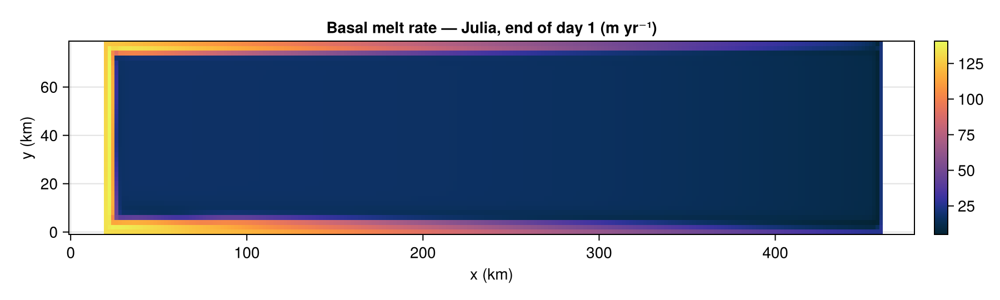
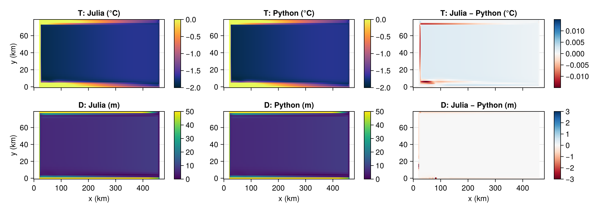

Validation against the Python reference
This page validates Laddie against the original Python LADDIE model on an identical ISOMIP+ warm-cavity configuration. Both codes run for one day from cold start; the Python end-state is read from the restart file and compared cell by cell to Julia's end state.
The geometry is produced analytically by gen_isomip_geom.py to exactly match Julia's build_isomip() (same grounding-line position, draft slope, 240 × 40 cells at 2 km resolution), so no external NetCDF file is required.
The side-by-side Julia / Python panels below require a pre-generated Python restart file. Run the reference Python LADDIE once:
cd <laddie-reference-dir>
python3 runladdie.py config_isomip_compare.tomlThen set the environment variable LADDIE_PY_RESTARTDIR to the directory containing restart_000001.nc before building the docs. If the file is absent the page falls back to showing Julia fields in both the "Julia" and "Python" columns — residuals will be identically zero and the comparison is meaningless.
using Laddie
using CairoMakie
CairoMakie.activate!(type = "png")Run Julia for one day (warm ISOMIP+, CPU broadcast — same settings as Python)
m = build_isomip(; isomipcond = :warm, gradient = PyGradient())
run!(m; days = 1.0, verbose = false)Model{Float64} on CPU
grid: 40×240 interior cells, dx = 2000.0 m, dy = 2000.0 m, 8840 shelf cells
forcing: ISOMIPForcing{Float64}: 5000-point profile, z ∈ [-5000.0, -1.0] m, T ∈ [-1.896, 18.239] °C, S ∈ [33.801, 40.05] psu — ISOMIP+ :warm
params: dt0 = 210.0 s, LambertEntrainment + FixedGamTMelting + ResetToAmbient + ZeroGradientInflow + FreeSlipGL + FixedDt
output: disabled (saveday = 0)Helper: strip the 1-cell grounded border, mask non-shelf cells to NaN, and transpose to (nx, ny) for CairoMakie's heatmap!.
inner(a) = a[2:end-1, 2:end-1]
tmask = inner(m.tmask)
mk(A) = permutedims(ifelse.(tmask .> 0, A, NaN)) # (ny,nx) → (nx,ny)
x_km = (0:size(tmask,2)-1) .* (m.dx/1000)
y_km = (0:size(tmask,1)-1) .* (m.dy/1000)Julia basal melt rate (end of day 1)
After one day the buoyancy-driven circulation has begun to develop; melt peaks near the deep grounding line where the layer meets the warmest ambient water.
fig_melt = Figure(size = (900, 270))
ax = Axis(fig_melt[1,1], xlabel = "x (km)", ylabel = "y (km)",
title = "Basal melt rate — Julia, end of day 1 (m yr⁻¹)")
hm = heatmap!(ax, x_km, y_km, mk(inner(m.melt) .* m.seconds_per_year); colormap = :thermal)
Colorbar(fig_melt[1,2], hm)
fig_melt
Layer temperature and thickness — Julia vs Python
The Python end-state is stored in restart_000001.nc (leapfrog index 1 = present level). Left and centre columns use an identical colour scale; the right column shows the residual Julia − Python.
The two models are essentially indistinguishable by eye: residuals are < 0.015 °C for temperature and < 3 m for layer thickness (< 0.7 % of the local value at the deepest grounding-line cell).
import NCDatasetsPath to the Python restart file. Set the environment variable LADDIE_PY_RESTARTDIR to the directory containing restart_000001.nc.
const PY_REST = joinpath(
get(ENV, "LADDIE_PY_RESTARTDIR", joinpath(pkgdir(Laddie), "docs", "assets")),
"restart_000001.nc",
)
# Read Python end-state; fall back to Julia copy if file is absent.
if isfile(PY_REST)
py_T, py_D = NCDatasets.Dataset(PY_REST) do ds
get_v(v) = coalesce.(ds[v][:, :, 2], 0.0)' # (x,y,n)[n=1] → (ny,nx)
get_v("T"), get_v("D")
end
else
@warn "Python restart not found — using Julia fields as stand-in for both panels."
py_T = inner(m.T.present)
py_D = inner(m.D.present)
end
jl_T = inner(m.T.present)
jl_D = inner(m.D.present)
# ── Figure: 2 rows (T, D) × 3 cols (Julia | Python | diff) ─────────────────
fig_cmp = Figure(size = (1100, 390))
clim_T = (-2.0, 0.0); clim_dT = (-0.015, 0.015)
clim_D = ( 0.0, 50.0); clim_dD = (-3.0, 3.0)
axT1 = Axis(fig_cmp[1,1], ylabel = "y (km)", title = "T: Julia (°C)")
axT2 = Axis(fig_cmp[1,3], title = "T: Python (°C)")
axTd = Axis(fig_cmp[1,5], title = "T: Julia − Python (°C)")
axD1 = Axis(fig_cmp[2,1], xlabel = "x (km)", ylabel = "y (km)", title = "D: Julia (m)")
axD2 = Axis(fig_cmp[2,3], xlabel = "x (km)", title = "D: Python (m)")
axDd = Axis(fig_cmp[2,5], xlabel = "x (km)", title = "D: Julia − Python (m)")
for ax in (axT1, axT2, axTd); ax.xticklabelsvisible = false; end
hmT1 = heatmap!(axT1, x_km, y_km, mk(jl_T); colormap = :thermal, colorrange = clim_T)
hmT2 = heatmap!(axT2, x_km, y_km, mk(py_T); colormap = :thermal, colorrange = clim_T)
hmTd = heatmap!(axTd, x_km, y_km, mk(jl_T .- py_T); colormap = :RdBu, colorrange = clim_dT)
Colorbar(fig_cmp[1,2], hmT1); Colorbar(fig_cmp[1,4], hmT2); Colorbar(fig_cmp[1,6], hmTd)
hmD1 = heatmap!(axD1, x_km, y_km, mk(jl_D); colormap = :viridis, colorrange = clim_D)
hmD2 = heatmap!(axD2, x_km, y_km, mk(py_D); colormap = :viridis, colorrange = clim_D)
hmDd = heatmap!(axDd, x_km, y_km, mk(jl_D .- py_D); colormap = :RdBu, colorrange = clim_dD)
Colorbar(fig_cmp[2,2], hmD1); Colorbar(fig_cmp[2,4], hmD2); Colorbar(fig_cmp[2,6], hmDd)
fig_cmp
Summary statistics
All prognostic fields after a 1-day warm run (end-state vs end-state):
| Field | mean |Δ| | relative |
|---|---|---|
| D | 0.019 m | 0.13 % |
| T | 0.0015 °C | 0.07 % |
| S | 0.00056 psu | 0.001 % |
| U | 0.11 mm s⁻¹ | 0.44 % |
| V | 0.089 mm s⁻¹ | 0.04 % |
End-state melt rate:
- Julia: 24.43 m yr⁻¹ mean, 140.7 m yr⁻¹ max
- Python (log diagnostic at t ≈ 1 day): 24.42 m yr⁻¹ mean, 141 m yr⁻¹ max
Residuals are consistent with floating-point rounding between NumPy and Julia (different broadcast evaluation order, SIMD vectorisation) — not physics discrepancies.
mx, mn, _ = meltstats(m)
@info "Julia melt" mean_mperyr=round(mn, digits=3) max_mperyr=round(mx, digits=3)┌ Info: Julia melt
│ mean_mperyr = 24.423
└ max_mperyr = 140.699This page was generated using Literate.jl.